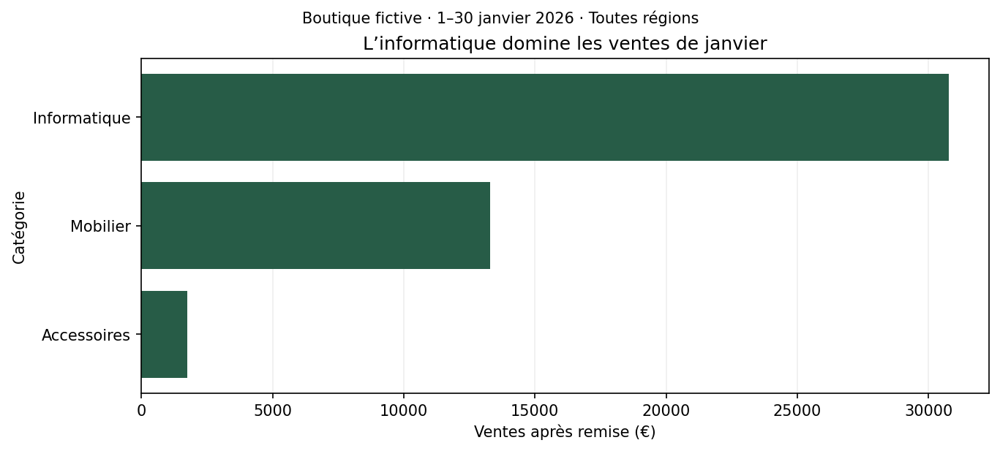
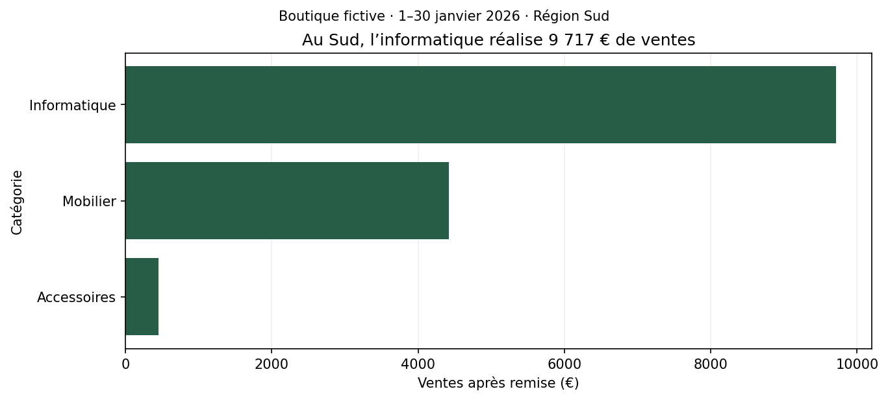
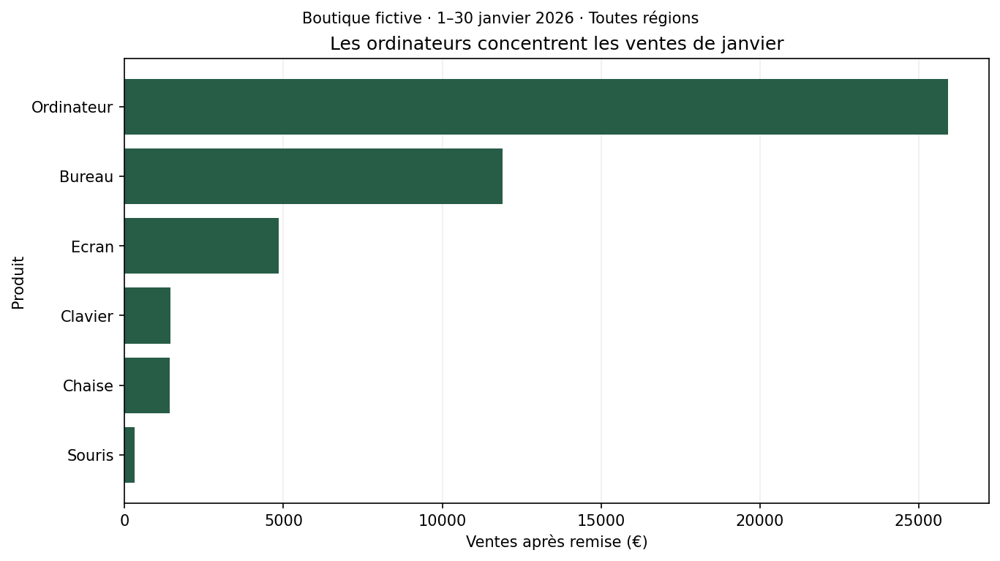

Matplotlib · De la question à la figure
Comparer.
Corriger. Expliquer.
Les solutions après votre premier essai.
Bloc 01 / 01 · Avant de comparer
Vérifiez votre démarche autant que l’image.
Le notebook corrigé est fourni au formateur dans sandbox-notebook/corrections. Exécutez d’abord le chargement et l’exemple du cours. Les corrections ci-dessous réutilisent les variables ventes et SORTIES.
Une autre couleur ou formulation de titre peut être correcte. Le montant, l’association catégorie–valeur et le périmètre doivent correspondre.
Bloc 01 / 02 · Exercice 1
Prédire, puis vérifier
par_categorie = (
ventes.groupby("Categorie")["Ventes"]
.sum()
.sort_values()
)
print(par_categorie)
fig, ax = plt.subplots(figsize=(9, 4), layout="constrained")
ax.barh(par_categorie.index, par_categorie.values, color="#275c47")
ax.set_title("L’informatique domine les ventes de janvier")
ax.set_xlabel("Ventes après remise (€)")
ax.set_ylabel("Catégorie")
ax.set_xlim(left=0)
ax.grid(axis="x", alpha=0.2)
ax.set_axisbelow(True)
fig.suptitle("Boutique fictive · 1–30 janvier 2026 · Toutes régions", fontsize=10)
fig.savefig(SORTIES / "01_categories.png", dpi=150, bbox_inches="tight")
plt.show()
Pourquoi cela fonctionne
Le tri porte sur la Series entière : les noms suivent leurs montants. Les totaux sont 1 752,50 €, 13 302,50 € et 30 776 €. mean() donnerait 116,83 €, 665,13 € et 1 231,04 € par ligne de vente (arrondis), pas par commande.
Entrée : le DataFrame ventes. Sortie : une Series agrégée, une Figure et un PNG. Le regroupement et le tri précèdent le tracé ; l’export cible la Figure nommée dans le code.
Bloc 01 / 03 · Exercice 2
Changer de périmètre : la région Sud
sud = ventes.loc[ventes["Region"] == "Sud"]
par_categorie_sud = sud.groupby("Categorie")["Ventes"].sum().sort_values()
fig_sud, ax_sud = plt.subplots(figsize=(9, 4), layout="constrained")
ax_sud.barh(par_categorie_sud.index, par_categorie_sud.values, color="#275c47")
ax_sud.set_title("Au Sud, l’informatique réalise 9 717 € de ventes")
ax_sud.set_xlabel("Ventes après remise (€)")
ax_sud.set_ylabel("Catégorie")
ax_sud.set_xlim(left=0)
ax_sud.grid(axis="x", alpha=0.2)
ax_sud.set_axisbelow(True)
fig_sud.suptitle("Boutique fictive · 1–30 janvier 2026 · Région Sud", fontsize=10)
fig_sud.savefig(SORTIES / "02_sud.png", dpi=150, bbox_inches="tight")
plt.show()
print(par_categorie_sud)
print(par_categorie_sud.sum())
Pourquoi cela fonctionne
Le filtre précède l’agrégation. Au Sud : Accessoires 455,50 €, Mobilier 4 424 €, Informatique 9 717 €. L’informatique arrive en tête des ventes ; les coûts ne sont pas disponibles pour conclure sur la rentabilité.
Entrée : le DataFrame ventes. Sortie : une Series agrégée, une Figure et un PNG. Le regroupement et le tri précèdent le tracé ; l’export cible la Figure nommée dans le code.
Bloc 01 / 04 · Exercice 3
Un graphique plausible… mais faux
totaux_tries = ventes.groupby("Categorie")["Ventes"].sum().sort_values()
fig_ok, ax_ok = plt.subplots(figsize=(9, 4), layout="constrained")
ax_ok.barh(totaux_tries.index, totaux_tries.values, color="#275c47")
ax_ok.set_title("L’informatique domine les ventes de janvier")
ax_ok.set_xlabel("Ventes après remise (€)")
ax_ok.set_ylabel("Catégorie")
ax_ok.set_xlim(left=0)
ax_ok.grid(axis="x", alpha=0.2)
ax_ok.set_axisbelow(True)
fig_ok.suptitle("Boutique fictive · 1–30 janvier 2026 · Toutes régions", fontsize=10)
fig_ok.savefig(SORTIES / "03_audit_corrige.png", dpi=150, bbox_inches="tight")
plt.show()
Pourquoi cela fonctionne
sorted(totaux.values) trie uniquement les montants. L’index reste Accessoires, Informatique, Mobilier : les deux dernières catégories reçoivent le mauvais montant. La somme reste 45 831 €, donc il faut contrôler les paires catégorie–valeur.
Entrée : le DataFrame ventes. Sortie : une Series agrégée, une Figure et un PNG. Le regroupement et le tri précèdent le tracé ; l’export cible la Figure nommée dans le code.
Bloc 01 / 05 · Exercice 4
Le premier livrable du fil rouge
par_produit = ventes.groupby("Produit")["Ventes"].sum().sort_values()
fig_produits, ax_produits = plt.subplots(figsize=(9, 5), layout="constrained")
ax_produits.barh(par_produit.index, par_produit.values, color="#275c47")
ax_produits.set_title("Les ordinateurs concentrent les ventes de janvier")
ax_produits.set_xlabel("Ventes après remise (€)")
ax_produits.set_ylabel("Produit")
ax_produits.set_xlim(left=0)
ax_produits.grid(axis="x", alpha=0.2)
ax_produits.set_axisbelow(True)
fig_produits.suptitle("Boutique fictive · 1–30 janvier 2026 · Toutes régions", fontsize=10)
fig_produits.savefig(SORTIES / "04_produits.png", dpi=150, bbox_inches="tight")
plt.show()
print(par_produit)
Pourquoi cela fonctionne
Ordinateur totalise 25 925 € sur 45 831 €. On peut vérifier les stocks et les coûts avant de recommander une action. Ce fichier de janvier ne permet ni de mesurer la marge ni de prédire les mois suivants. Les barres comparent des catégories ; sum() mesure les ventes cumulées.
Entrée : le DataFrame ventes. Sortie : une Series agrégée, une Figure et un PNG. Le regroupement et le tri précèdent le tracé ; l’export cible la Figure nommée dans le code.